第 22 章：哈希
22.1 哈希连接
22.1.1 一阶段哈希连接
哈希连接使用预建的哈希表搜索匹配的行。以下是包含这种连接的计划示例：
=> EXPLAIN (costs off) SELECT *
FROM tickets t
JOIN ticket_flights tf ON tf.ticket_no = t.ticket_no;
QUERY PLAN
−−−−−−−−−−−−−−−−−−−−−−−−−−−−−−−−−−−−−−−−−−−
Hash Join
Hash Cond: (tf.ticket_no = t.ticket_no)
−> Seq Scan on ticket_flights tf
−> Hash
−> Seq Scan on tickets t
(5 rows)在第一阶段，Hash Join 节点 1 调用 Hash 节点 2，后者从其子节点取出整个内层数据集并将其放入哈希表中。
哈希表存储成对的哈希键和值，通过键可以快速访问值；搜索时间不依赖于哈希表的大小，因为哈希键或多或少均匀地分布在有限数量的桶之间。给定一个键，其所属的桶由哈希键的哈希函数决定；由于桶的数量始终是 2 的幂，只需取计算值的所需位数即可。
如缓冲区缓存一样，这种实现使用了一个可动态扩展的哈希表，通过链解决哈希冲突。3
在连接操作的第一阶段，会扫描内层数据集，并针对每一行计算哈希函数。连接条件 (Hash Cond) 中引用的列作为哈希键，而哈希表本身存储了内层数据集中所有的查询字段。
如果整个哈希表可以容纳在 RAM 中，那么哈希连接最为高效，因为在这种情况下，执行器能够在一个批次内处理数据。所分配的内存块大小受到 work_mem × hash_mem_multiplier 的限制。
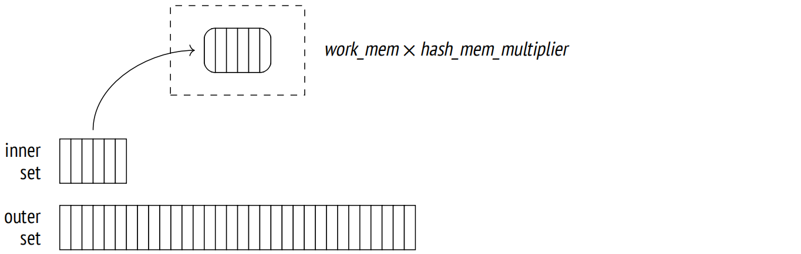让我们运行 EXPLAIN ANALYZE 来查看有关查询内存使用情况的统计数据：
=> SET work_mem = '256MB';
=> EXPLAIN (analyze, costs off, timing off, summary off)
SELECT * FROM bookings b
JOIN tickets t ON b.book_ref = t.book_ref;
QUERY PLAN
−−−−−−−−−−−−−−−−−−−−−−−−−−−−−−−−−−−−−−−−−−−−−−−−−−−−−−−−−−−−−−−
Hash Join (actual rows=2949857 loops=1)
Hash Cond: (t.book_ref = b.book_ref)
−> Seq Scan on tickets t (actual rows=2949857 loops=1)
−> Hash (actual rows=2111110 loops=1)
Buckets: 4194304 Batches: 1 Memory Usage: 145986kB
−> Seq Scan on bookings b (actual rows=2111110 loops=1)
(6 rows)与以不同方式处理内层数据集和外层数据集的嵌套循环连接不同，哈希连接可以交换它们。较小的数据集通常用作内层数据集，因为这样生成的哈希表较小。
在此例中，整个表适合所分配的缓存：它大约需要 143MB (Memory Usgae) 并包含 4M = 2²² 个桶。因此，连接在一个阶段内完成 (Batches)。
但是，如果查询仅引用一列，那么哈希表将占用 111 MB：
=> EXPLAIN (analyze, costs off, timing off, summary off)
SELECT b.book_ref
FROM bookings b
JOIN tickets t ON b.book_ref = t.book_ref;
QUERY PLAN
−−−−−−−−−−−−−−−−−−−−−−−−−−−−−−−−−−−−−−−−−−−−−−−−−−−−−−−−−−−−−−−
Hash Join (actual rows=2949857 loops=1)
Hash Cond: (t.book_ref = b.book_ref)
−> Index Only Scan using tickets_book_ref_idx on tickets t
(actual rows=2949857 loops=1)
Heap Fetches: 0
−> Hash (actual rows=2111110 loops=1)
Buckets: 4194304 Batches: 1 Memory Usage: 113172kB
−> Seq Scan on bookings b (actual rows=2111110 loops=1)
(8 rows)
=> RESET work_mem;这是避免在查询中引用多余字段的另外一个原因 (例如，如果你使用 * ，就会发生这种情况)。
选择的桶数应该保证当哈希表完全填满数据时，每个桶平均只容纳一行。更高的密度会增加哈希冲突的概率，导致搜索效率降低，而不太紧实的哈希表会占用太多内存。桶的预估数量会增加到最接近的 2 的幂次。4
(如果哈希表的预估大小超过了基于单行平均宽度的内存限制，将使用两阶段哈希)。
在哈希表完全构建之前，哈希连接无法返回结果。
在第二阶段 (此时哈希表已经构建完成)，Hash Join 节点调用第二个子节点以获取外层数据集。对于每个扫描的行，都会在哈希表中搜索匹配项。这需要为包含在连接条件中的外层数据集的列计算哈希键。
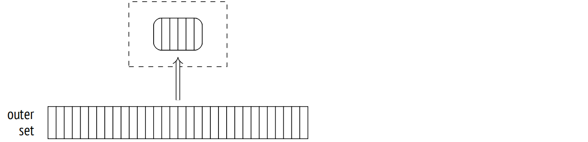找到的匹配项返回给父节点。
成本估算。我们已经介绍了基数估算；由于它不依赖于连接方法，所以我现在将重点放在成本估算上面。
Hash 节点的成本由其子节点的总成本表示。它是一个虚拟数字，仅仅填充计划中的槽。5 所有实际估算都包含在 Hash Join 节点的成本中。6
此处是一个例子：
=> EXPLAIN (analyze, timing off, summary off)
SELECT * FROM flights f
JOIN seats s ON s.aircraft_code = f.aircraft_code;
QUERY PLAN
−−−−−−−−−−−−−−−−−−−−−−−−−−−−−−−−−−−−−−−−−−−−−−−−−−−−−−−−−−−−−−−−−−−−−
Hash Join (cost=38.13..278507.28 rows=16518865 width=78)
(actual rows=16518865 loops=1)
Hash Cond: (f.aircraft_code = s.aircraft_code)
−> Seq Scan on flights f (cost=0.00..4772.67 rows=214867 widt...
(actual rows=214867 loops=1)
−> Hash (cost=21.39..21.39 rows=1339 width=15)
(actual rows=1339 loops=1)
Buckets: 2048 Batches: 1 Memory Usage: 79kB
−> Seq Scan on seats s (cost=0.00..21.39 rows=1339 width=15)
(actual rows=1339 loops=1)
(10 rows)连接的启动成本主要反映了创建哈希表的成本，包括以下部分：
- 获取内层数据集的总成本，这是构建哈希表所需的
- 对于内层数据集的每一行，计算所有包含在连接键中的列的哈希函数成本 (每次操作预估为 cpu_operator_cost)
- 将所有内层数据集中的行插入到哈希表的成本 (每个插入的行预估为 cpu_tuple_cost)
- 获取外层数据集的启动成本，这是开始连接操作所需的
总成本包括启动成本和连接本身的成本，即：
- 对于外层数据集的每一行，计算所有包含在连接键中的列的哈希函数成本 (cpu_operator_cost)
- 重新检查连接条件的成本，这是为了解决可能的哈希冲突 (每检查一个操作符预估为 cpu_operator_cost)
- 处理每个结果行的成本 (cpu_tuple_cost)
需要重新检查的次数是最难评估的。它是通过将外层数据集的行数乘以内层数据集的一部分 (存储在哈希表中) 计算而来的。为了评估这个比例，规划器必须考虑到数据分布可能是不均匀的。我将省略这些计算细节；7 在这个特定案例中，这个比例估计为 0.150112。
因此，查询的成本估算如下：
=> WITH cost(startup) AS (
SELECT round((
21.39 +
current_setting('cpu_operator_cost')::real * 1339 +
current_setting('cpu_tuple_cost')::real * 1339 +
0.00
)::numeric, 2)
)
SELECT startup,
startup + round((
4772.67 +
current_setting('cpu_operator_cost')::real * 214867 +
current_setting('cpu_operator_cost')::real * 214867 * 1339 *
0.150112 +
current_setting('cpu_tuple_cost')::real * 16518865
)::numeric, 2) AS total
FROM cost;
startup | total
−−−−−−−−−+−−−−−−−−−−−
38.13 | 278507.26
(1 row)此处是依赖图：
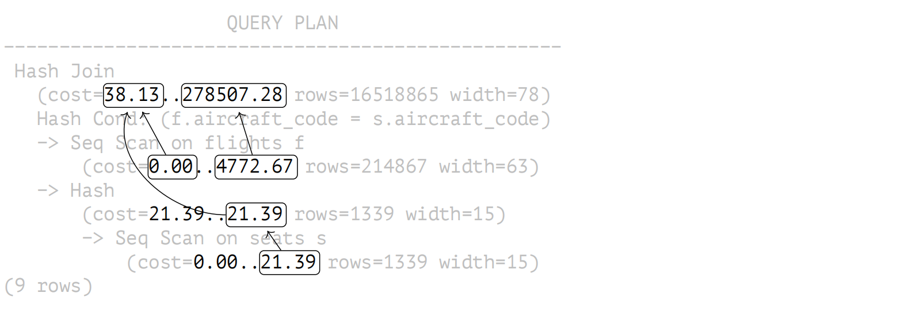22.1.2 两阶段哈希连接
如果规划器的评估结果表明哈希表不适合所分配的内存，那么内层数据集将被分成若干批次，分别处理。批次数量 (就像桶的数量一样) 总是 2 的幂次；使用哪个批次由哈希键的相应位数决定。8
任何两个匹配的行均属于同一个批次：放入不同批次的行不能有相同的哈希码。
所有批次都包含相同数量的哈希键。如果数据分布均匀，批次的大小也将大致相同。规划器可以通过选择合适的批次数量来控制内存消耗。9
在第一阶段，执行器扫描内层数据集以构建哈希表。如果扫描的行属于第一批次，则将其添加到哈希表并保存在 RAM 中。否则，它将被写入临时文件 (每个批次都有一个单独的文件)。10
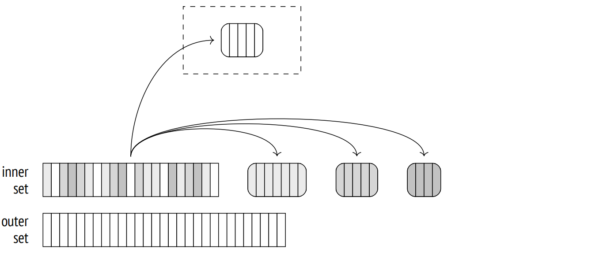会话可以存储在磁盘上的临时文件总量受 temp_file_limit 参数的限制 (临时表不包括在此限制中)。一旦会话达到此限制，查询便会中止。
第二阶段，执行器扫描外层数据集。如果行属于第一批次，它将与包含内层数据集第一批次行的哈希表进行匹配 (无论如何，其他批次中都不会有匹配)。
如果行属于不同的批次，它将存储在一个临时文件中，这个临时文件再次为每个批次单独创建。因此，N 个批次可以使用 2(N − 1) 个文件 (如果某些批次是空的，则更少)。
一旦第二阶段完成，为哈希表分配的内存被释放。此时，我们已经得到了其中一个批次的连接结果。
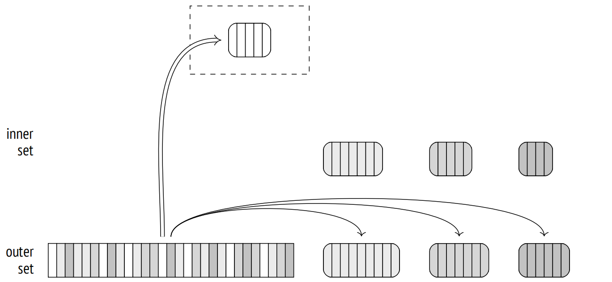对于保存在磁盘上的每个批次，都会重复这两个阶段：内层数据集中的行从临时文件转移到哈希表；然后从另一个临时文件中读取外层数据集中与同一批次相关的行，并与该哈希表进行匹配。一旦处理完毕，临时文件就会被删除。
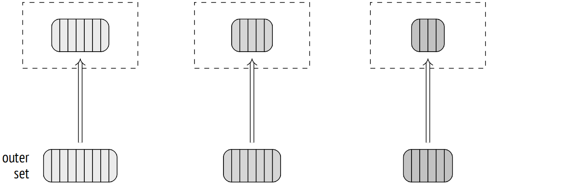与一阶段连接的类似输出不同，两阶段的 EXPLAIN 命令的输出会包含多个批次。如果使用 BUFFERS 选项运行，这个命令还会显示磁盘访问的统计数据：
=> EXPLAIN (analyze, buffers, costs off, timing off, summary off)
SELECT *
FROM bookings b
JOIN tickets t ON b.book_ref = t.book_ref;
QUERY PLAN
−−−−−−−−−−−−−−−−−−−−−−−−−−−−−−−−−−−−−−−−−−−−−−−−−−−−−−−−−−−−−−−
Hash Join (actual rows=2949857 loops=1)
Hash Cond: (t.book_ref = b.book_ref)
Buffers: shared hit=7236 read=55626, temp read=55126
written=55126
−> Seq Scan on tickets t (actual rows=2949857 loops=1)
Buffers: shared read=49415
−> Hash (actual rows=2111110 loops=1)
Buckets: 65536 Batches: 64 Memory Usage: 2277kB
Buffers: shared hit=7236 read=6211, temp written=10858
−> Seq Scan on bookings b (actual rows=2111110 loops=1)
Buffers: shared hit=7236 read=6211
(11 rows)我已经在上面展示了这个查询，并增加了 work_mem 设置。4MB 的默认值太小，整个哈希表无法全部放入 RAM 中；在本例中，数据被分成 64 个批次，并且哈希表使用了 64K = 216 个桶。随着哈希表的构建 (Hash 节点) ，数据被写入临时文件 (temp written)；在连接阶段 (Hash Join 节点)，临时文件被读取和写入 (temp read, written)。
要收集更多关于临时文件的统计数据，你可以将 log_temp_files 参数设为零。然后服务器日志将列出所有的临时文件和其大小 (在删除临时文件时列出)。
22.1.3 动态调整
计划的事件流程可能会因为两个问题而受到干扰：不准确的统计信息和不均匀的数据分布。
如果连接键列中的值分布不均，那么不同的批次将具有不同的大小。
如果某个批次 (第一个批次除外) 变得过大，其所有行都必须写入磁盘，然后再从磁盘读取。外层数据集会造成大部分问题，因为它通常更大。因此，如果外层数据集的 MCV 上有常规的、非多元统计信息 (也就是说，外层数据集由一个表表示，并且连接是通过单列执行的)，具有与 MCV 相对应的哈希码的行被认为是第一批次的一部分。11 这种技术 (称为倾斜优化) 可以在一定程度上减少两阶段连接的 I/O 开销。
由于这两个因素，一些 (或全部) 批次的大小可能会超过预估值。然后，相应的哈希表将不适合所分配的内存块，并超过定义的限制。
因此，如果正在构建的哈希表变得太大，批次的数量会即时增加 (翻倍)。每个批次实际上被分成两个新的批次：大约一半的行 (假设分布是均匀的) 留在哈希表中，而另一半被保存到一个新的临时文件中。12
即使最初规划的是一阶段连接，这种拆分也可能会发生。事实上，一阶段连接和两阶段连接使用同一个算法实现，由相同的代码实现；我在这里单独提出它们，仅仅是为了让叙述更加流畅。
批次数量无法减少。如果事实证明规划器高估了数据大小，批次也不会被合并在一起。
在分布不均的情况下，增加批次数量可能无济于事。例如，如果在所有行中，键列都包含一个相同的值，那么它们将被放入同一批次中，因为哈希函数将一次又一次返回相同的值。不幸的是，在这种情况下，哈希表将继续增长，不管施加了什么限制。
理论上，这个问题可以通过多阶段连接来解决，它会对批次执行部分扫描，但尚不支持。
为了演示批次数量的动态增加，我们得先执行一些操作：
=> CREATE TABLE bookings_copy (LIKE bookings INCLUDING INDEXES)
WITH (autovacuum_enabled = off);
=> INSERT INTO bookings_copy SELECT * FROM bookings;
INSERT 0 2111110
=> DELETE FROM bookings_copy WHERE random() < 0.9;
DELETE 1899232
=> ANALYZE bookings_copy;
=> INSERT INTO bookings_copy SELECT * FROM bookings
ON CONFLICT DO NOTHING;
INSERT 0 1899232
=> SELECT reltuples FROM pg_class WHERE relname = 'bookings_copy';
reltuples
−−−−−−−−−−−
211878
(1 row)现在我们得到一个名为 bookings_copy 的新表。它是 bookings 表的精确副本，但规划器对于表中行数低估了十倍。如果为另一个连接操作产生的行集生成哈希表，可能会出现类似的情况，因此没有可靠的统计信息可用。
这种错误计算使规划器认为 8 个桶就足够了，但是在执行连接时，这个数字增长到了 32：
=> EXPLAIN (analyze, costs off, timing off, summary off)
SELECT *
FROM bookings_copy b
JOIN tickets t ON b.book_ref = t.book_ref;
QUERY PLAN
−−−−−−−−−−−−−−−−−−−−−−−−−−−−−−−−−−−−−−−−−−−−−−−−−−−−−−−−−−−−−−−−−−−−−
Hash Join (actual rows=2949857 loops=1)
Hash Cond: (t.book_ref = b.book_ref)
−> Seq Scan on tickets t (actual rows=2949857 loops=1)
−> Hash (actual rows=2111110 loops=1)
Buckets: 65536 (originally 65536) Batches: 32 (originally 8)
Memory Usage: 4040kB
−> Seq Scan on bookings_copy b (actual rows=2111110 loops=1)
(7 rows)成本估算。我已经使用这个示例演示了一阶段连接的成本估算，但现在我将把可用内存的大小减少到最小，因此规划器将不得不使用两个批次。这增加了连接的成本：
=> SET work_mem = '64kB';
=> EXPLAIN (analyze, timing off, summary off)
SELECT * FROM flights f
JOIN seats s ON s.aircraft_code = f.aircraft_code;
QUERY PLAN
−−−−−−−−−−−−−−−−−−−−−−−−−−−−−−−−−−−−−−−−−−−−−−−−−−−−−−−−−−−−−−−−−−−−−
Hash Join (cost=45.13..283139.28 rows=16518865 width=78)
(actual rows=16518865 loops=1)
Hash Cond: (f.aircraft_code = s.aircraft_code)
−> Seq Scan on flights f (cost=0.00..4772.67 rows=214867 widt...
(actual rows=214867 loops=1)
−> Hash (cost=21.39..21.39 rows=1339 width=15)
(actual rows=1339 loops=1)
Buckets: 2048 Batches: 2 Memory Usage: 55kB
−> Seq Scan on seats s (cost=0.00..21.39 rows=1339 width=15)
(actual rows=1339 loops=1)
(10 rows)
=> RESET work_mem;第二阶段的成本是将行溢出到临时文件并从这些文件中读取而产生的。
两阶段连接的启动成本基于一阶段连接的启动成本，该成本增加了将所需数量的页面写入磁盘的预估成本，以存储内层数据集所有行的所有必要字段。13 尽管在构建哈希表时第一批次不写入磁盘，但估算没有考虑到这一点，因此不依赖于批次的数量。
总成本包括一阶段连接的总成本和读取之前存储在磁盘上的内层数据集的预估成本，以及读取和写入外层数据集的预估成本。
写入和读取都按每页花费 seq_page_cost 预估，因为假定 I/O 操作是顺序的。
在此特例下，内层数据集所需的页数预估为 7，而外层数据集的数据预估适合 2309 页。将这些估算值与上面计算的一阶段连接的成本相加之后，我们得到了与查询计划中所示的相同数字：
=> SELECT 38.13 + -- startup cost of a one-pass join
current_setting('seq_page_cost')::real * 7
AS startup,
278507.28 + -- total cost of a one-pass join
current_setting('seq_page_cost')::real * 2 * (7 + 2309)
AS total;
startup | total
−−−−−−−−−+−−−−−−−−−−−
45.13 | 283139.28
(1 row)因此，如果内存不足，连接将分两个阶段执行并且效率变得更低。因此，遵循以下几点很重要：
- 查询必须以排除哈希表中多余字段的方式组成。
- 在构建哈希表时，规划器必须选择两组行中较小的一组。
22.1.4 在并行计划中使用哈希连接
上面描述的哈希连接算法也可以用于并行计划。首先，若干个并行进程各自独立地为内层数据集构建它们自己的 (完全相同的) 哈希表；然后他们开始并行处理外层数据集。此处的性能提升是由于每个进程只扫描其自己份额的外层数据集的行。
以下计划使用常规的一阶段哈希连接：
=> SET work_mem = '128MB';
=> SET enable_parallel_hash = off;
=> EXPLAIN (analyze, costs off, timing off, summary off)
SELECT count(*)
FROM bookings b
JOIN tickets t ON t.book_ref = b.book_ref;
QUERY PLAN
−−−−−−−−−−−−−−−−−−−−−−−−−−−−−−−−−−−−−−−−−−−−−−−−−−−−−−−−−−−−−−−−−−−−−
Finalize Aggregate (actual rows=1 loops=1)
−> Gather (actual rows=3 loops=1)
Workers Planned: 2
Workers Launched: 2
−> Partial Aggregate (actual rows=1 loops=3)
−> Hash Join (actual rows=983286 loops=3)
Hash Cond: (t.book_ref = b.book_ref)
−> Parallel Index Only Scan using tickets_book_ref...
Heap Fetches: 0
−> Hash (actual rows=2111110 loops=3)
Buckets: 4194304 Batches: 1 Memory Usage:
113172kB
−> Seq Scan on bookings b (actual rows=2111110...
(13 rows)
=> RESET enable_parallel_hash;此处每个进程对 bookings 表进行哈希处理，然后通过 Parallel Index Only Scan 节点检索其自己份额的外层数据集，并将这些行与哈希表进行匹配。
哈希表内存限制分别应用于每个并行进程，所以为此分配的内存总大小将比计划 (Memoey Usage) 中显示的大三倍。
22.1.5 并行一阶段哈希连接
尽管常规的哈希连接在并行计划中效率很高 (尤其是对于较小的内层数据集，并行处理对其意义不大)，但更大的数据集更适合由特殊的并行哈希连接算法处理。
并行算法的一个重要区别是，哈希表是在共享内存中创建的，这个内存是动态分配的，所有参与连接操作的并行进程都可以访问。并行处理并不是创建多个独立的哈希表，而是建立了一个共同的哈希表，它使用所有参与进程的专用总内存量。这增加了一阶段完成连接的可能性。
在第一个阶段 (在计划中由 Parallel Hash 节点表示)，所有并行进程并行访问内层数据集，建立了一个共同的哈希表。14
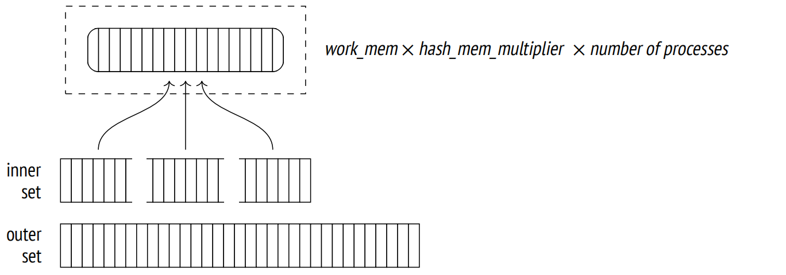要从此处继续进行，每个并行进程必须完成其在第一阶段处理的份额。15
在第二阶段 (Parallel Hash Join 节点)，进程再次并行运行，将它们外层数据集的份额与此时已经构建好的哈希表进行匹配。16
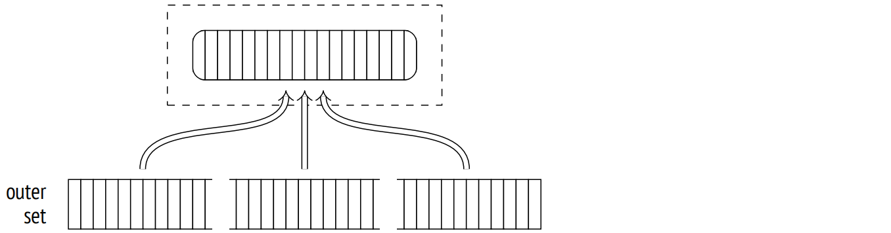此处是一个此类计划的例子：
=> SET work_mem = '64MB';
=> EXPLAIN (analyze, costs off, timing off, summary off)
SELECT count(*)
FROM bookings b
JOIN tickets t ON t.book_ref = b.book_ref;
QUERY PLAN
−−−−−−−−−−−−−−−−−−−−−−−−−−−−−−−−−−−−−−−−−−−−−−−−−−−−−−−−−−−−−−−−−−−−−
Finalize Aggregate (actual rows=1 loops=1)
−> Gather (actual rows=3 loops=1)
Workers Planned: 2
Workers Launched: 2
−> Partial Aggregate (actual rows=1 loops=3)
−> Parallel Hash Join (actual rows=983286 loops=3)
Hash Cond: (t.book_ref = b.book_ref)
−> Parallel Index Only Scan using tickets_book_ref...
Heap Fetches: 0
−> Parallel Hash (actual rows=703703 loops=3)
Buckets: 4194304 Batches: 1 Memory Usage:
115392kB
−> Parallel Seq Scan on bookings b (actual row...
(13 rows)
=> RESET work_mem;这与我在上一章节中展示的查询相同，但当时并行哈希连接通过 enable_parallel_hash 参数关闭了。
虽然与之前演示的常规哈希连接相比，可用内存减少了一半，但操作仍然一阶段完成，因为它使用了分配给所有并行进程的内存 (Memory Usage)。哈希表变得稍微大一些，但由于现在我们只有这一个哈希表，总内存使用量减少了。
22.1.6 并行两阶段哈希连接
所有并行进程的内存合并起来可能仍然不足以容纳整个哈希表。这可能在计划阶段或稍后在查询执行期间变得明显。在这种情况下，应用的两阶段连接算法与我们迄今为止所看到的有很大不同。
这个算法的主要区别在于它创建了几个较小的哈希表，而不是一个大的哈希表。每个进程都有其自己的表并独立处理自己的批次。(但由于独立的哈希表仍然位于共享内存中，任何进程都可以访问这些表中的任何一个) 如果规划显示将需要不止一个批次，17 那么会立即为每个进程构建一个独立的哈希表。如果决定是在执行阶段做出的，则重建哈希表。18
因此，在第一阶段，进程并行扫描内层数据集，将其分成批次并将它们写入临时文件中。19 由于每个进程只读取自己份额的内层数据集，因此它们中的任何一个都不会为任何批次 (即使是第一个批次) 创建完整的哈希表。任何批次的完整数据集仅累积在所有并行进程以同步方式写入的文件中。20 因此，与非并行和一阶段并行版本的算法不同，并行两阶段哈希连接将所有批次写入磁盘，包括第一个批次。
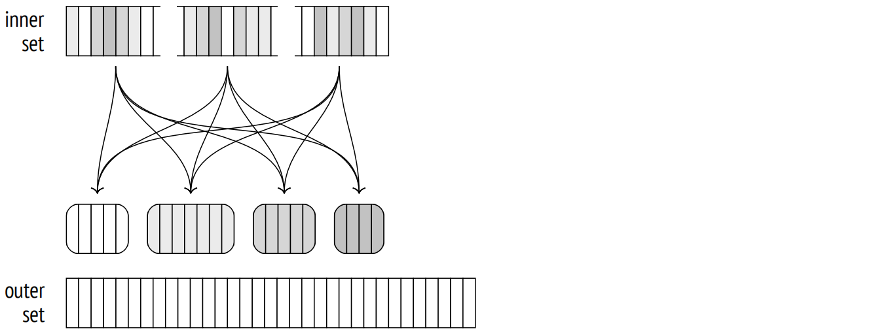一旦所有进程都完成了内层数据集的哈希计算，第二阶段就开始了。21
如果使用的是非并行版本的算法，属于第一批次的外层数据集将立即与哈希表匹配。但在并行版本的情况下，内存中还没有哈希表，所以工作进程独立处理批次。因此，第二阶段从外层数据集的并行扫描开始，将其分配到批次中，每个批次被写入到一个单独的临时文件中。22 扫描的行不会插入到哈希表中 (就像在第一阶段发生的那样)，因此批次的数量永远不会增加。
一旦所有进程都完成了对外层数据集的扫描，在磁盘上便有了 2N 个临时文件；它们包含内层数据集和外层数据集的批次。

然后每个进程选择其中一个批次并执行连接：它将内层数据集加载到位于内存中的哈希表中，然后扫描外层数据集，并将它们与哈希表进行匹配。当批次连接完成时，进程选择下一个尚未处理的批次。23
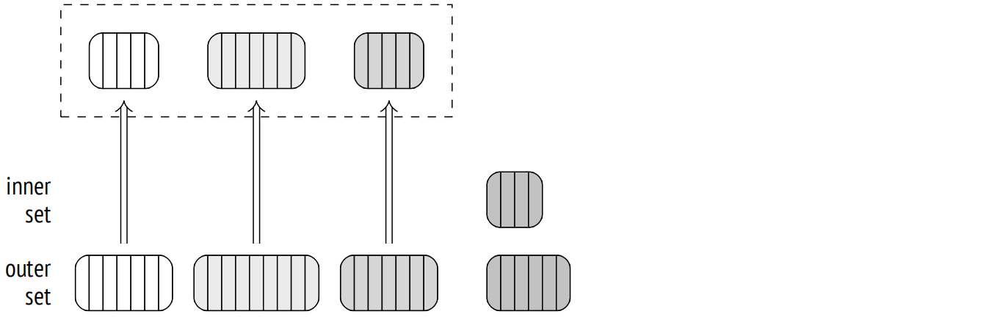如果没有更多未处理的批次，已完成自己批次的进程开始处理当前正由其他进程处理的批次之一；这种并发处理是可能的，因为所有哈希表都位于共享内存中。
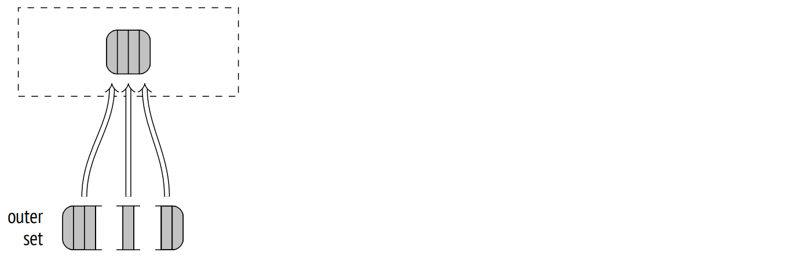这种方法比对所有进程使用单个大的哈希表更有效：设置并行处理更容易，且同步的成本更低。
22.1.7 调整
哈希连接算法支持任何类型的连接：除了内连接，它还可以处理左、右和全外连接，以及半连接和反连接。但是正如我之前提到的，连接条件仅限于等值操作符。
在处理嵌套循环连接时，我们已经观察到其中一些操作。这是右外连接的示例：
=> EXPLAIN (costs off) SELECT *
FROM bookings b
LEFT OUTER JOIN tickets t ON t.book_ref = b.book_ref;
QUERY PLAN
−−−−−−−−−−−−−−−−−−−−−−−−−−−−−−−−−−−−−−−−
Hash Right Join
Hash Cond: (t.book_ref = b.book_ref)
−> Seq Scan on tickets t
−> Hash
−> Seq Scan on bookings b
(5 rows)请注意，SQL 查询中指定的逻辑左外连接在执行计划中被转换为右外连接的物理操作。
在逻辑层面，bookings 是外表 (构成连接操作的左侧)，而 tickets 表是内表。因此，没有 tickets 的 bookings 也必须包含在连接结果中。
在物理层面，内层数据集和外层数据集是基于连接成本而非它们在查询文本中的位置来分配的。通常情况下，这意味着拥有较小哈希表的数据集将被用作为内层数据集。这正是在此处发生的事情：bookings 表是内层数据集，左外连接被改为右外连接。
反之亦然，如果查询指定右外连接 (以显示不与任何 bookings 相关的 tickets)，那么执行计划使用左外连接：
=> EXPLAIN (costs off) SELECT *
FROM bookings b
RIGHT OUTER JOIN tickets t ON t.book_ref = b.book_ref;
QUERY PLAN
−−−−−−−−−−−−−−−−−−−−−−−−−−−−−−−−−−−−−−−−
Hash Left Join
Hash Cond: (t.book_ref = b.book_ref)
−> Seq Scan on tickets t
−> Hash
−> Seq Scan on bookings b
(5 rows)为了完整地展示，我将提供一个包含全外连接的查询计划示例：
=> EXPLAIN (costs off) SELECT *
FROM bookings b
FULL OUTER JOIN tickets t ON t.book_ref = b.book_ref;
QUERY PLAN
−−−−−−−−−−−−−−−−−−−−−−−−−−−−−−−−−−−−−−−−
Hash Full Join
Hash Cond: (t.book_ref = b.book_ref)
−> Seq Scan on tickets t
−> Hash
−> Seq Scan on bookings b
(5 rows)目前，并行哈希连接不支持右外连接和全外连接。24
请注意，下一个示例使用 bookings 表作为外层数据集，但如果支持的话，规划器会更倾向于使用右外连接。
=> EXPLAIN (costs off) SELECT sum(b.total_amount)
FROM bookings b
LEFT OUTER JOIN tickets t ON t.book_ref = b.book_ref;
QUERY PLAN
−−−−−−−−−−−−−−−−−−−−−−−−−−−−−−−−−−−−−−−−−−−−−−−−−−−−−−−−−−−−−−−−−−−−−
Finalize Aggregate
−> Gather
Workers Planned: 2
−> Partial Aggregate
−> Parallel Hash Left Join
Hash Cond: (b.book_ref = t.book_ref)
−> Parallel Seq Scan on bookings b
−> Parallel Hash
−> Parallel Index Only Scan using tickets_book...
(9 rows)22.2 非重复值与分组
用于聚合分组和去重的算法与连接算法非常相似。它们可使用的一种方法是在所需列上构建哈希表。只有当哈希表中尚不存在这些值时，这些值才被加入到哈希表中。结果是，哈希表累积了所有不同的值。
执行哈希聚合的节点称为 HashAggregate。25
让我们考虑一些可能需要这个节点的情况。
每个旅行类别的座位数 (GROUP BY)：
=> EXPLAIN (costs off) SELECT fare_conditions, count(*)
FROM seats
GROUP BY fare_conditions;
QUERY PLAN
−−−−−−−−−−−−−−−−−−−−−−−−−−−−−−
HashAggregate
Group Key: fare_conditions
−> Seq Scan on seats
(3 rows)旅行类别列表 (DISTINCT）：
=> EXPLAIN (costs off) SELECT DISTINCT fare_conditions
FROM seats;
QUERY PLAN
−−−−−−−−−−−−−−−−−−−−−−−−−−−−−−
HashAggregate
Group Key: fare_conditions
−> Seq Scan on seats
(3 rows)旅行类别再加上一个值 (UNION)：
=> EXPLAIN (costs off) SELECT fare_conditions
FROM seats
UNION
SELECT NULL;
QUERY PLAN
−−−−−−−−−−−−−−−−−−−−−−−−−−−−−−−−−−−−
HashAggregate
Group Key: seats.fare_conditions
−> Append
−> Seq Scan on seats
−> Result
(5 rows)Append 节点将两个数据集组合在一起，但不会删除任何重复项，这些重复项不应出现在 UNION 结果中。它们必须由 HashAggregate 节点单独删除。
为哈希表分配的内存块受到 work_mem × hash_mem_multiplier 的限制，就像哈希连接一样。
如果哈希表适合分配的内存，那么聚合使用单个批次：
=> EXPLAIN (analyze, costs off, timing off, summary off)
SELECT DISTINCT amount FROM ticket_flights;
QUERY PLAN
−−−−−−−−−−−−−−−−−−−−−−−−−−−−−−−−−−−−−−−−−−−−−−−−−−−−−−−−−−−−−−−
HashAggregate (actual rows=338 loops=1)
Group Key: amount
Batches: 1 Memory Usage: 61kB
−> Seq Scan on ticket_flights (actual rows=8391852 loops=1)
(4 rows)在 amounts 字段中没有那么多不同的值，所以哈希表只占用了 61 kB (Memory Usage)。
一旦哈希表填满了所分配的内存，所有后续值都会溢出到临时文件中，并基于其哈希值的若干位进行分区。分区数量是 2 的幂，选择分区的方式是使每个分区的哈希表都适合分配的内存。当然，评估的准确性取决于所收集的统计信息的质量，因此接收到的数字乘以 1.5，以进一步减小分区大小并提高每个分区一阶段处理完成的机会。26
一旦整个数据集被扫描完毕，节点返回那些成功进入哈希表的值的聚合结果。
然后清除哈希表，上一阶段保存到临时文件中的每个分区被扫描和处理，就像任何其他数据集一样。如果哈希表仍然超出分配的内存，将要溢出的行将再次被分区并写入磁盘以供进一步处理。
为了避免过多 I/O，两阶段哈希连接算法将 MCVS 移入第一批次。然而，聚合不需要这种优化：适合分配内存的那些行不会被分成分区，并且 MCVS 很可能在足够早的时候出现，从而进入 RAM。
=> EXPLAIN (analyze, costs off, timing off, summary off)
SELECT DISTINCT flight_id FROM ticket_flights;
QUERY PLAN
−−−−−−−−−−−−−−−−−−−−−−−−−−−−−−−−−−−−−−−−−−−−−−−−−−−−−−−−−−−−−−−
HashAggregate (actual rows=150588 loops=1)
Group Key: flight_id
Batches: 5 Memory Usage: 4145kB Disk Usage: 98184kB
−> Seq Scan on ticket_flights (actual rows=8391852 loops=1)
(4 rows)在这个例子中，不同 ID 的数量相对较多，所以哈希表不适合分配的内存。执行查询使用了五个批次：一个批次用于初始数据集，四个批次用于写入磁盘的分区。
-
backend/executor/nodeHashjoin.c ↩︎
-
backend/executor/nodeHash.c ↩︎
-
backend/utils/hash/dynahash.c ↩︎
-
backend/executor/nodeHash.c, ExecChooseHashTableSize function ↩︎
-
backend/optimizer/plan/createplan.c, create_hashjoin_plan function ↩︎
-
backend/optimizer/path/costsize.c, initial_cost_hashjoin and final_cost_hashjoin functions ↩︎
-
backend/utils/adt/selfuncs.c, estimate_hash_bucket_stats function ↩︎
-
backend/executor/nodeHash.c, ExecHashGetBucketAndBatch function ↩︎
-
backend/executor/nodeHash.c, ExecChooseHashTableSize function ↩︎
-
backend/executor/nodeHash.c, ExecHashTableInsert function ↩︎
-
backend/executor/nodeHash.c, ExecHashBuildSkewHash function ↩︎
-
backend/executor/nodeHash.c, ExecHashIncreaseNumBatches function ↩︎
-
backend/optimizer/path/costsize.c, page_size function ↩︎
-
backend/executor/nodeHash.c, MultiExecParallelHash function ↩︎
-
backend/storage/ipc/barrier.c ↩︎
-
backend/executor/nodeHashjoin.c, ExecParallelHashJoin function ↩︎
-
backend/executor/nodeHash.c, ExecChooseHashTableSize function ↩︎
-
backend/executor/nodeHash.c, ExecParallelHashIncreaseNumBatches function ↩︎
-
backend/executor/nodeHash.c, MultiExecParallelHash function ↩︎
-
backend/utils/sort/sharedtuplestore.c ↩︎
-
backend/executor/nodeHashjoin.c, ExecParallelHashJoin function ↩︎
-
backend/executor/nodeHashjoin.c, ExecParallelHashJoinPartitionOuter function ↩︎
-
backend/executor/nodeHashjoin.c, ExecParallelHashJoinNewBatch function ↩︎
-
commitfest.postgresql.org/33/2903 ↩︎
-
backend/executor/nodeAgg.c ↩︎
-
backend/executor/nodeAgg.c, hash_choose_num_partitions function ↩︎